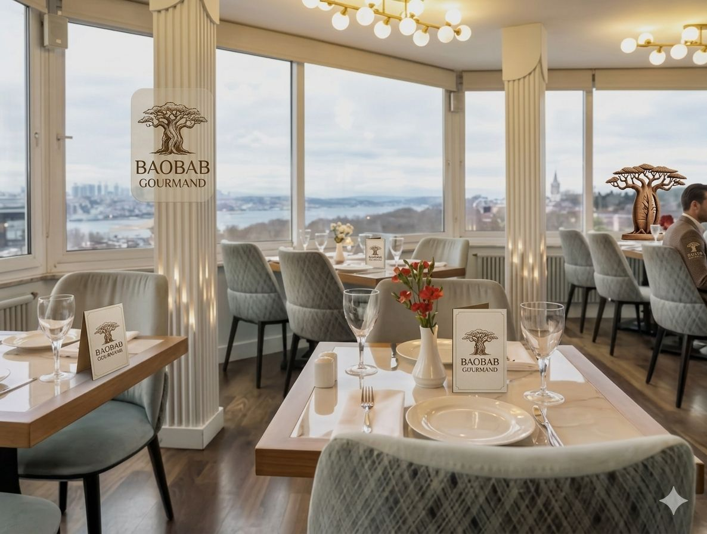
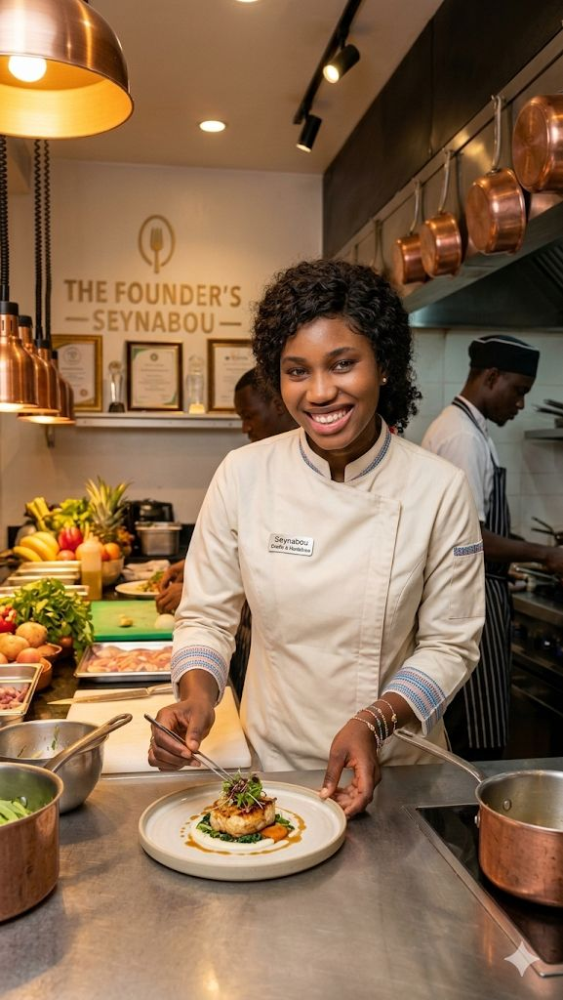
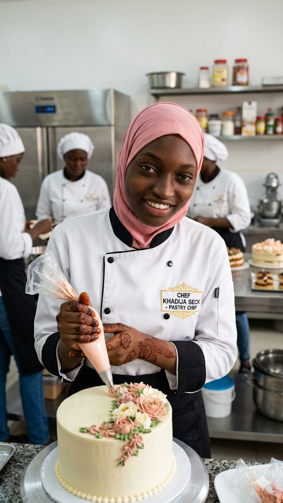

Notre histoire
À Propos
la passion du goût, le respect des traditions , le plaisir de partager.

Depuis 2020
Une Passion Née au Cœur de Dakar
Le Baobab Gourmand est né du rêve de Seynabou Diane , cheffe formée à Dakar et à l’international, de créer un lieu où les saveurs africaines s’élèvent au rang de la haute cuisine. Chaque plat y raconte une histoire, mêlant tradition et créativité pour offrir une expérience culinaire unique et inoubliable.
Fondé en 2020 au cœur du dynamique quartier du Plateau à Dakar, le Baobab Gourmand s’est rapidement hissé parmi les tables incontournables de la ville. Récompensé à trois reprises par le prix « Meilleure Table Africaine » du guide Afrique Gastronomique en 2021 , 2023 et 2026 il s’impose aujourd’hui comme une référence de la gastronomie africaine moderne, alliant excellence, créativité et authenticité.
Chaque plat devient une véritable expérience sensorielle, mêlant héritage culinaire et créativité moderne. Inspirées des recettes traditionnelles de nos grand-mères, les créations du chef sont revisitées avec finesse grâce à des techniques contemporaines et des produits locaux rigoureusement sélectionnés, pour offrir des saveurs authentiques et inoubliables.
Ce qui nous anime
Nos Valeurs
Authenticité
Nous valorisons les recettes et les saveurs qui racontent une histoire. Chaque plat est inspiré du patrimoine culinaire africain, respecté et sublimé sans jamais en perdre l’essence..
Qualité
Nous sélectionnons avec soin des produits frais et locaux afin de garantir une cuisine savoureuse, saine et raffinée. Chaque détail compte pour offrir une expérience irréprochable.
Passion
Animés par un profond amour de la cuisine, nous mettons tout notre cœur dans chaque création. Cette passion se reflète dans l’attention portée aux détails et dans le plaisir d’offrir des moments uniques à nos clients.
Innovation
Nous revisitons la tradition avec créativité en associant techniques modernes et inspirations africaines, pour proposer une cuisine audacieuse et toujours renouvelée.
Les visages du Baobab
Notre Équipe
Une équipe passionnée au service de votre plaisir.

Seynabou diane
Cheffe & Fondatrice
Formée à l'École Le cordon Bleu Paris, Seynabou a ramené son savoir-faire en Afrique pour sublimer la cuisine de son enfance.

mame bousso diallo
Cheffe de Partie
Spécialiste des cuissons longues et des marinades, mame bousso apporte sa maîtrise des saveurs intenses et profondes.

khadija seck
Cheffe Pâtissière
Artiste des saveurs sucrées, khadija des desserts qui fusionnent tradition africaine et pâtisserie française.
Khadim gueye
Directeur de Salle
Avec son sens de l'hospitalité et du détail, khadim s'assure que chaque client vit une expérience mémorable.
Reconnus & primés
Nos Récompenses
Meilleure Table Africaine
Guide Afrique Gastronomique 2024
3.9/5 sur TripAdvisor
Plus de 200 avis vérifiés
Presse & Médias
Le Monde Afrique, TF1, RFM